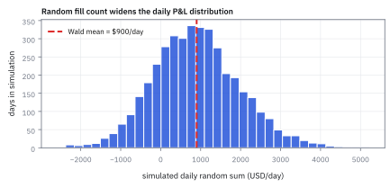

2.3 เมื่อทั้งกำไรต่อรายการและจำนวนรายการเป็นตัวแปรสุ่ม
ยอดรวมที่ไม่รู้ล่วงหน้าว่ามีกี่รายการ มีค่าเฉลี่ยเท่ากับจำนวนเฉลี่ยคูณค่าเฉลี่ยต่อรายการ แต่มีความเสี่ยงมากกว่าการตรึงจำนวน
desk หนึ่งได้ fill (คำสั่งที่จับคู่สำเร็จ) เฉลี่ยวันละ 12 ครั้ง จำนวนต่อวันแกว่งแบบ Poisson และไม่ขึ้นกับกำไรของแต่ละ fill แต่ละ fill กำไรเฉลี่ย \$75 SD \$150 (ตัวเลขสมมติ) ทีมเขียนรายงานว่ากำไรเฉลี่ยต่อวัน \$900 และ SD ต่อวัน $\sqrt{12}\times150\approx\$519.62$ ผู้จัดการความเสี่ยงถามว่าตัวเลขไหนถูก ตัวเลขไหนต่ำไป
ลองตอบก่อนเปิดเฉลย
ค่าเฉลี่ย \$900 ถูก แต่ SD ต่ำไป SD ที่ถูกคือ $\sqrt{12(150^2)+75^2(12)}=\sqrt{337{,}500}\approx\$580.95$ ส่วนที่หายไปคือ $75^2\times12=67{,}500$ ดอลลาร์² หรือ 20% ของ variance ซึ่งมาจากการที่จำนวน fill เองไม่แน่นอน วันที่ได้ 7 fill กับวันที่ได้ 17 fill มีกำไรเฉลี่ยต่างกันถึง \$750 ก่อนจะนับการแกว่งของแต่ละ fill เสียอีก
ภาพรวมก่อนลงสูตร
ยอดรวมของวันสุ่มสองชั้น ชั้นแรกตลาดเลือกว่าวันนี้จะมีกี่ fill ชั้นที่สองแต่ละ fill ได้กำไรเท่าไร เครื่องมือสองตัวจากหน้าก่อนแก้โจทย์นี้ได้ตรงตัว: ตรึงจำนวนไว้ก่อน คำนวณเหมือนผลรวมจำนวนคงที่ แล้วใช้ tower property เฉลี่ยกลับสำหรับค่าเฉลี่ย และใช้ law of total variance สำหรับความเสี่ยง
รูปด้านล่างแสดงทั้งเรื่องในภาพเดียว ถ้ารู้จำนวน $n$ ยอดรวมเฉลี่ยอยู่บนเส้น $75n$ และแกว่งรอบเส้นนั้นในแถบเขียวกว้าง $150\sqrt n$ นั่นคือส่วนภายใน แต่ $n$ เองก็สุ่มตามแท่งสีส้มด้านล่าง ค่าเฉลี่ยบนเส้นจึงขยับไปตาม $n$ (ช่วงสีม่วง) นั่นคือส่วนระหว่าง
ครึ่งหลังของหน้าตอบคำถามที่ยากกว่า: ถ้าจำนวนรายการไม่ได้สุ่มจากภายนอก แต่เกิดจากกฎ “หยุดเมื่อ…” ที่ดูผลที่ผ่านมา ค่าเฉลี่ยยังเป็นจำนวนเฉลี่ยคูณค่าเฉลี่ยต่อรายการได้ไหม คำตอบคือได้ ภายใต้เงื่อนไขของ Wald's identity แต่สูตร variance ใช้ไม่ได้ และถ้าเงื่อนไขหลุด เช่นกลยุทธ์เบิ้ลเงินเดิมพัน แม้ค่าเฉลี่ยก็ผิด
รูป — ยอดรวมรายวันเมื่อจำนวน fill เป็นตัวแปรสุ่ม
ศัพท์ที่ใช้ในหัวข้อนี้
- Random sum
- ผลรวม $S_N=X_1+\cdots+X_N$ ที่จำนวนพจน์ $N$ เป็นตัวแปรสุ่ม ใช้กับกำไรรวมจากจำนวน fill ที่ไม่แน่นอน ยอดเคลมประกันรวม หรือความเสียหายรวมจากการผิดนัด
- Compound Poisson
- random sum ที่ $N$ เป็น Poisson และอิสระจาก $X_i$ เป็นแบบจำลองมาตรฐานของความเสียหายรวมในงานประกันและความเสี่ยงด้านปฏิบัติการ
- Indicator $\mathbf 1(A)$
- ตัวแปรที่เป็น 1 เมื่อเงื่อนไข $A$ จริง และเป็น 0 เมื่อไม่จริง ค่าเฉลี่ยของมันคือโอกาสของ $A$ ใช้เปลี่ยนการนับให้เป็นผลรวม
- Stopping time
- กฎหยุดที่ตัดสินได้ว่าหยุดหรือยัง ณ รอบ $n$ จากผลถึงรอบ $n$ เท่านั้น ไม่แอบดูอนาคต เช่น “หยุดเมื่อกำไรสะสมถึง \$1,000” แต่ “หยุดก่อนวันที่ราคาจะร่วง” ไม่ใช่
- Wald's identity
- $E[S_N]=\mu\,E[N]$ สำหรับ stopping time ที่ $E[N]$ จำกัด และ $X_i$ เป็น iid ที่มีค่าเฉลี่ย ใช้ตรวจว่ากฎหยุดเปลี่ยนเกมยุติธรรมให้ได้เปรียบได้หรือไม่
- iid
- independent and identically distributed: แต่ละตัวอิสระกันและมีการแจกแจงเดียวกัน
สัญลักษณ์และหน่วย
| สัญลักษณ์ | ความหมาย | หน่วย |
|---|---|---|
| $N$ | จำนวน fill ในหนึ่งวัน (จำนวนเต็มไม่ติดลบ) | ครั้ง |
| $X_i$ | กำไรของ fill ที่ $i$ | ดอลลาร์ |
| $\mu$, $\sigma^2$ | ค่าเฉลี่ยและ variance ของ $X_i$ | ดอลลาร์, ดอลลาร์² |
| $S_N$ | ยอดรวมของวัน โดยกำหนด $S_0=0$ | ดอลลาร์ |
| $\lambda$ | ค่าเฉลี่ยของ $N$ เมื่อ $N$ เป็น Poisson | ครั้ง |
ขั้นที่ 1 — ตั้งโจทย์ให้ครบ รวมวันที่ไม่มี fill
ก่อนคำนวณต้องเขียนให้ชัดว่ายอดรวมคืออะไร และอะไรอิสระจากอะไร เพราะสูตรทั้งหน้าขึ้นกับเงื่อนไขนี้
$X_1,X_2,\ldots$ เป็น iid และ $N$ อิสระจากลำดับ $X_i$ ทั้งหมด ข้อหลังแปลว่า วันที่ fill เยอะไม่ได้มีกำไรต่อ fill ดีหรือแย่กว่าวันที่ fill น้อย ถ้า desk ได้ fill เยอะในวันที่ตลาดวุ่นวายและกำไรต่อ fill ต่ำ ข้อนี้ไม่จริง และสูตรข้างล่างจะให้คำตอบผิด วันที่ $N=0$ ยอดรวมเป็นศูนย์ตามนิยาม ไม่ต้องจัดการแยก
ขั้นที่ 2 — ค่าเฉลี่ย: ตรึงจำนวนก่อน แล้วเฉลี่ยกลับ
ผลรวมที่จำนวนพจน์คงที่หาค่าเฉลี่ยง่าย จึงเริ่มจากสมมติว่ารู้แล้วว่าวันนี้มี $n$ fill แล้วค่อยปล่อยให้ $n$ สุ่ม
บรรทัดแรกแทน $N$ ด้วย $n$ ได้เพราะเรากำลังดูเฉพาะวันที่ $N=n$ บรรทัดที่สามเปลี่ยน $E[X_i\mid N=n]$ เป็น $\mu$ ตรงนี้คือจุดที่ใช้ความเป็นอิสระของ $N$ กับ $X_i$ ไม่ใช่เพราะตรึงจำนวนแล้ว ถ้าไม่อิสระ ค่าเฉลี่ยต่อ fill ในวันที่มี $n$ fill อาจไม่ใช่ $\mu$
บรรทัดสุดท้ายคือ tower property: $E[S_N\mid N]=\mu N$ เป็นตัวแปรสุ่มที่ขึ้นกับ $N$ เฉลี่ยมันอีกชั้นได้ $\mu E[N]$ กับ desk ของเราได้ $75\times12=900$ ดอลลาร์ ถ้ารู้แล้วว่าวันนี้มี 5, 12 หรือ 20 fill ค่าเฉลี่ยของวันนั้นคือ 375, 900 หรือ 1,500
ขั้นที่ 3 — variance เมื่อรู้จำนวนแล้ว
ต่อไปหาความเสี่ยง เริ่มที่ชั้นในเหมือนเดิม เมื่อรู้ $n$ ยอดรวมคือผลรวมของ $n$ ตัวที่อิสระกัน ต้องเพิ่มเงื่อนไขว่า $\sigma^2$ และ $\operatorname{Var}(N)$ มีค่าจำกัด
นี่คือสูตร variance ของผลรวมจาก variance and standard deviation พจน์ covariance เป็นศูนย์เพราะ $X_i$ อิสระกัน และการรู้ $N$ ไม่ได้ทำให้มันสัมพันธ์กันขึ้นมา เพราะ $N$ อิสระจากทั้งลำดับ variance โตตาม $n$ SD จึงโตตาม $\sqrt n$ ซึ่งเป็นความกว้างของแถบเขียวในรูปภาพรวม
ขั้นที่ 4 — ประกอบสองส่วนด้วย law of total variance
ตอนนี้มีทั้งค่าเฉลี่ยและ variance ของชั้นใน เป็นตัวแปรสุ่มที่ขึ้นกับ $N$ ทั้งคู่ ป้อนเข้า EVVE ได้ทันที
พจน์แรกคือความเสี่ยงของกำไรแต่ละ fill เมื่อรู้จำนวนแล้ว พจน์ที่สองคือความเสี่ยงจากจำนวน: ค่าเฉลี่ย $N\mu$ ขยับตาม $N$ และ $\operatorname{Var}(N\mu)=\mu^2\operatorname{Var}(N)$ เพราะค่าคงที่ที่คูณอยู่ออกมาเป็นกำลังสอง
สามกรณีที่ควรเช็ก: ถ้าจำนวนคงที่ $\operatorname{Var}(N)=0$ เหลือ $n\sigma^2$ ตามเดิม ถ้า $\mu=0$ พจน์จำนวนหายไป เพราะ fill เพิ่มหนึ่งครั้งไม่ได้เลื่อนค่าเฉลี่ย ถ้า $N$ เป็น Poisson ที่มี $\operatorname{Var}(N)=E[N]=\lambda$ สูตรย่อเหลือ $\lambda(\sigma^2+\mu^2)=\lambda E[X_1^2]$ ซึ่งคือ variance ของ compound Poisson
ขั้นที่ 5 — ตัวเลขของ desk
โจทย์ให้อะไรมาบ้าง: $N$ เป็น Poisson ที่มี $E[N]=\operatorname{Var}(N)=12$, $\mu=75$ และ $\sigma=150$ ดอลลาร์ และ $N$ อิสระจากกำไรของแต่ละ fill
คำตอบ: SD ต่อวันประมาณ \$580.95 ส่วนภายใน 80% ส่วนจำนวน 20% ของ variance ถ้าตรึงจำนวนไว้ที่ 12 จะได้ $\sqrt{270{,}000}\approx519.62$ ซึ่งเก็บค่าเฉลี่ยไว้ถูกแต่ทิ้งความเสี่ยงจากจำนวน
ตรวจเองใน 10 วินาที: ใช้รูปย่อของ Poisson: $12\,(150^2+75^2)=12\times28{,}125=337{,}500$ ตรงกัน
รูป — ยอดรวมจากการจำลอง 4,000 วัน

ขั้นที่ 6 — การนับก็เป็น random sum: fill จากคำสั่งที่ส่ง
ผลรวมของตัวบ่งชี้คือการนับ จึงใช้สูตรเดียวกันกับคำถาม “ส่งคำสั่งไปจำนวนสุ่ม จะได้ fill กี่ครั้ง” ได้ โจทย์นี้คือต้นแบบของหน้าถัดไป และเป็นโจทย์คลาสสิกเดียวกับ “แม่ไก่ออกไข่จำนวนสุ่ม แต่ละฟองฟักเป็นลูกไก่ด้วยโอกาส $p$”
โจทย์ให้อะไรมาบ้าง: ใน 1 ชั่วโมง ส่งคำสั่ง $N$ ครั้ง โดย $N$ เป็น Poisson ค่าเฉลี่ย 120 แต่ละคำสั่ง fill ด้วยโอกาส 0.35 อย่างอิสระ ให้ $K=\sum_{i=1}^{N}\mathbf 1(\text{fill}_i)$
คำตอบ: fill เฉลี่ย 42 ครั้งต่อชั่วโมง และ variance ก็เป็น 42 ด้วย ค่าเฉลี่ยของตัวบ่งชี้คือโอกาส 0.35 และ variance ของมันคือ $p(1-p)$ แบบ Bernoulli การที่ค่าเฉลี่ยเท่ากับ variance เป็นสัญญาณแรกว่า $K$ อาจเป็น Poisson อีกตัว Poisson thinning พิสูจน์ว่าใช่ และพิสูจน์ด้วยว่าคำสั่งที่ไม่ fill เป็น Poisson อีกตัวที่อิสระจาก $K$
ขั้นที่ 7 — กฎหยุดที่ดูแต่อดีต: Wald's identity
ทุกขั้นที่ผ่านมาให้ $N$ อิสระจากผลลัพธ์ แต่นักเทรดมักใช้กฎแบบ “เทรดไปเรื่อย ๆ จนกำไรถึงเป้าแล้วหยุด” ซึ่ง $N$ ขึ้นกับผลลัพธ์โดยตรง การตรึง $N=n$ แล้วบอกว่าค่าเฉลี่ยคือ $n\mu$ ใช้ไม่ได้อีกต่อไป ต้องหาทางอื่น โดยยังให้ $X_i$ เป็น iid มีค่าเฉลี่ย $\mu$ และ $E[N]\lt\infty$
บรรทัดแรกเขียนผลรวมใหม่: รายการที่ $i$ ถูกนับเมื่อเรายังเล่นอยู่ถึงรอบ $i$ คือ $N\ge i$ บรรทัดที่สามคือหัวใจ: การตัดสินว่าจะเล่นรอบที่ $i$ หรือไม่ ทำก่อนเห็น $X_i$ โดยใช้แค่ $X_1,\ldots,X_{i-1}$ ซึ่งอิสระจาก $X_i$ ตัวบ่งชี้ $\mathbf 1(N\ge i)$ จึงอิสระจาก $X_i$ และค่าเฉลี่ยของผลคูณแยกเป็นผลคูณของค่าเฉลี่ยได้ นี่คือนิยามของ stopping time ที่ทำงานอยู่
บรรทัดสุดท้ายใช้ $N=\sum_{i\ge1}\mathbf 1(N\ge i)$ เช่น $N=3$ ทำให้ตัวบ่งชี้ของ $i=1,2,3$ เป็น 1 รวมได้ 3 พอดี เฉลี่ยสองข้างได้ $E[N]=\sum_iP(N\ge i)$ การสลับผลรวมอนันต์กับค่าเฉลี่ยในบรรทัดที่สองต้องมีเหตุผลรองรับ: $\sum_iE\big[|X_i|\,\mathbf 1(N\ge i)\big]=E|X_1|\,E[N]\lt\infty$ ซึ่งต้องการทั้ง $X_i$ ที่มีการแจกแจงเดียวกันและ $E[N]$ จำกัด
ขั้นที่ 8 — Wald ให้ค่าเฉลี่ยถูก แต่สูตร variance ใช้ไม่ได้
ตัวอย่างเล็กที่สุดที่เห็นความต่างระหว่าง “จำนวนสุ่มอิสระ” กับ “กฎหยุด” ครบทุกเส้นทาง
โจทย์ให้อะไรมาบ้าง: แต่ละรอบได้ $X_i=1$ หรือ 0 ด้วยโอกาสครึ่งหนึ่ง อย่างอิสระ กฎ: เล่นรอบแรกเสมอ ถ้าได้ 1 หยุดทันที ถ้าได้ 0 เล่นอีกรอบแล้วหยุด กฎนี้ดูแค่ผลที่เห็นแล้ว จึงเป็น stopping time
คำตอบ: ค่าเฉลี่ยรวม 0.75 ตรงกับ Wald แต่ถ้าแยกตามจำนวนรอบ ค่าเฉลี่ยไม่ใช่ $n\mu$ เลย เพราะกฎหยุดคัดเส้นทาง: เส้นทางที่หยุดรอบแรกคือเส้นทางที่ได้ 1 ทุกเส้น
ยิ่งกว่านั้น $S_N$ เป็น 1 ด้วยโอกาส 3/4 และ 0 ด้วยโอกาส 1/4 variance จริงคือ $0.75(0.25)=0.1875$ ถ้ายืมสูตรของจำนวนอิสระมาจะได้ $\sigma^2E[N]+\mu^2\operatorname{Var}(N)=0.25(1.5)+0.25(0.25)=0.4375$ ผิดไปเกินสองเท่า
รูป — ทุกเส้นทางของกฎ “ได้ 1 แล้วหยุด เล่นไม่เกินสองรอบ”
ขั้นที่ 9 — เมื่อเงื่อนไขของ Wald หลุด: เบิ้ลเงินเดิมพันจนกว่าจะชนะ
กลยุทธ์เก่าแก่ในบ่อนคือเดิมพัน \$1 ถ้าแพ้ให้เบิ้ลเป็น \$2, \$4, \$8 จนกว่าจะชนะครั้งแรกแล้วหยุด เหรียญแต่ละครั้งยุติธรรม กำไรเฉลี่ยของทุกตาเป็นศูนย์ แต่ผลลัพธ์กลับเป็น +\$1 ทุกครั้ง ขั้นนี้หาว่าเงื่อนไขข้อไหนหลุด
บรรทัดที่สองนับเงิน: ถ้าชนะครั้งแรกที่รอบ $N$ ก่อนหน้านั้นเสียไป $1+2+\cdots+2^{N-2}$ และรอบสุดท้ายได้ $2^{N-1}$ ผลรวมเรขาคณิต $1+2+\cdots+2^{N-2}=2^{N-1}-1$ จึงเหลือ +1 เสมอ ส่วน $E[N]=2$ จำกัด และกฎหยุดก็ดูแค่อดีต แล้วอะไรผิด
เงินเดิมพันของแต่ละรอบไม่เท่ากัน $Y_i$ จึงไม่ใช่ iid และบรรทัดสุดท้ายคือหลักฐาน: ผลรวมที่ใช้รับรองการสลับผลรวมกับค่าเฉลี่ยในขั้นที่พิสูจน์ Wald กลายเป็นอนันต์ แต่ละรอบมีส่วนร่วม 1 เท่ากันหมด เพราะเงินเดิมพันโตเร็วเท่ากับที่โอกาสไปถึงรอบนั้นหดลง ราคาที่ต้องจ่ายคือเงินทุนไม่จำกัด แพ้ติด 6 ครั้งมีโอกาส 1/64 และต้องรับขาดทุนสะสม \$63 ก่อนจะได้ \$1 คืน รายละเอียดอยู่ใน martingale betting system
รูป — กำไรสะสมของกลยุทธ์เบิ้ลเงินเดิมพัน
ความผิดที่ให้คำตอบผิดแบบเงียบ ๆ
จำนวนสัมพันธ์กับกำไรต่อรายการ: สามวัน (สมมติ) มี 10, 12, 14 fill และกำไรต่อ fill 75, 75, 50 ยอดรวมคือ 750, 900, 700 เฉลี่ย 783.33 แต่จำนวนเฉลี่ย 12 คูณกำไรต่อ fill เฉลี่ยรายวัน $(75+75+50)/3=66.67$ ได้ 800 เพราะวันที่ fill เยอะเป็นวันที่กำไรต่อ fill ต่ำ $N$ กับ $X_i$ ไม่อิสระกัน ต้องสร้าง $E[S_N\mid N]$ จากข้อมูลจริง ไม่ใช่ใช้ $N\mu$
ตรึงจำนวนตอนคิดความเสี่ยง: SD $519.62$ แทน $580.95$ ต่ำไป 10.6% และยิ่งต่ำไปมากเมื่อกำไรเฉลี่ยต่อรายการใหญ่เมื่อเทียบกับ SD ต่อรายการ
ยืมสูตร variance ไปใช้กับกฎหยุด: ในตัวอย่างหยุดเมื่อได้ 1 สูตรให้ 0.4375 แต่ของจริงคือ 0.1875 Wald รับรองแค่ค่าเฉลี่ย
กฎหยุดที่แอบดูอนาคต: “เล่นรอบแรกเฉพาะเมื่อรอบแรกจะชนะ” ทำให้เกมเหรียญ ±1 ที่ยุติธรรมให้ค่าเฉลี่ย 1/2 แทน 0 นี่ไม่ใช่ stopping time และใน backtest มันคือ look-ahead bias
เงินเดิมพันโตตามผลขาดทุน: กลยุทธ์เบิ้ลเงินดูเหมือนได้ +1 เสมอ แต่เงื่อนไขการแจกแจงเดียวกันหลุด และความเสียหายก่อนชนะไม่มีขอบเขต
ใช้ทำอะไรบนโต๊ะจริง
desk ที่ทำกำไรจากจำนวน fill มาก ๆ เช่น market making ใช้สูตรนี้ตั้งงบความเสี่ยงรายวัน เพราะจำนวน fill ผันผวนตามสภาพตลาด งานประกันและความเสี่ยงด้านปฏิบัติการใช้ compound Poisson หาความเสียหายรวมต่อปีจากจำนวนเหตุการณ์คูณความเสียหายต่อเหตุการณ์ ฝ่ายเครดิตใช้แนวคิดเดียวกันกับจำนวนลูกหนี้ที่ผิดนัดคูณความเสียหายต่อราย ส่วน Wald's identity ใช้ตรวจว่ากฎตัดขาดทุนหรือกฎทำกำไรใด ๆ ไม่ได้เปลี่ยนค่าเฉลี่ยของเกม มันเปลี่ยนได้แค่ รูปร่าง ของการแจกแจงและจำนวนรอบที่ใช้
โจทย์ตรวจความเข้าใจ
1. จำนวนรายการมี $E[N]=5$ และ $\operatorname{Var}(N)=2$ อิสระจากรายการแต่ละตัวซึ่งเป็น iid มี $\mu=3$ และ $\sigma^2=4$ จงหาค่าเฉลี่ยและ variance ของยอดรวม
เฉลย
ค่าเฉลี่ย $\mu E[N]=3(5)=15$ variance $\sigma^2E[N]+\mu^2\operatorname{Var}(N)=4(5)+9(2)=20+18=38$ สูตรนี้ไม่ต้องให้ $N$ เป็น Poisson ขอแค่อิสระและมี variance จำกัด
2. เหรียญ $X_1=\pm1$ ยุติธรรม กฎคือ $N=1$ ถ้า $X_1=+1$ และ $N=0$ ถ้า $X_1=-1$ ค่าเฉลี่ยของ $S_N$ เท่าไร ใช้ Wald ได้ไหม
เฉลย
$E[S_N]=\tfrac12(1)+\tfrac12(0)=\tfrac12$ แต่ $\mu E[N]=0\times\tfrac12=0$ ใช้ Wald ไม่ได้ เพราะการตัดสินว่าจะเล่นรอบแรกหรือไม่ใช้ผลของรอบแรกเอง ก่อนเห็น $X_1$ เราไม่มีข้อมูลอะไรเลย กฎนี้จึงไม่ใช่ stopping time และ $\mathbf 1(N\ge1)$ ไม่อิสระจาก $X_1$
3. สัญญาณซื้อขายเกิดเป็น Poisson เฉลี่ย 40 ครั้งต่อเดือน แต่ละสัญญาณกำไรเฉลี่ย \$1,800 SD \$9,000 อิสระจากจำนวน จงหาค่าเฉลี่ยและ SD ของกำไรรายเดือน และบอกว่าการทำให้จำนวนสัญญาณคงที่ 40 ลด SD ได้เท่าไร
เฉลย
ค่าเฉลี่ย $40(1{,}800)=72{,}000$ variance $40(9{,}000^2)+40(1{,}800^2)=3{,}240{,}000{,}000+129{,}600{,}000=3{,}369{,}600{,}000$ SD ประมาณ \$58,048 ส่วนจำนวนเป็นแค่ 3.85% ของ variance ถ้าตรึงจำนวน SD เหลือ $\sqrt{3{,}240{,}000{,}000}=56{,}921$ ลดลงแค่ 1.94% เพราะ SD ต่อสัญญาณใหญ่กว่ากำไรเฉลี่ยห้าเท่า ความเสี่ยงจึงมาจากผลของแต่ละสัญญาณเป็นหลัก
คำนวณซ้ำด้วย JavaScript
ฟังก์ชัน compound คืนค่าเฉลี่ย ส่วนภายใน ส่วนจำนวน และ SD ของ random sum โค้ดไล่ทุกเส้นทางของกฎหยุดสองรอบ และตรวจว่ากลยุทธ์เบิ้ลเงินจบที่ +1 ทุกความยาวของการแพ้ติด
เปิดดูโค้ด
const compound = (en, vn, mu, sd) => ({
mean: en * mu, within: en * sd ** 2, count: mu ** 2 * vn,
sd: Math.sqrt(en * sd ** 2 + mu ** 2 * vn)
});
const daily = compound(12, 12, 75, 150); // 900, 270000, 67500, 580.95
const fixed = compound(12, 0, 75, 150); // sd 519.62
const monthly = compound(40, 40, 1800, 9000); // 72000, sd 58048.26
const fills = compound(120, 120, 0.35, Math.sqrt(0.35 * 0.65)); // 42, var 42
// stopping rule: stop after a 1, never play more than two rounds
const paths = [{p: 0.5, n: 1, s: 1}, {p: 0.25, n: 2, s: 1}, {p: 0.25, n: 2, s: 0}];
const EN = paths.reduce((a, q) => a + q.p * q.n, 0); // 1.5
const ES = paths.reduce((a, q) => a + q.p * q.s, 0); // 0.75
const VS = paths.reduce((a, q) => a + q.p * (q.s - ES) ** 2, 0); // 0.1875
const VN = paths.reduce((a, q) => a + q.p * (q.n - EN) ** 2, 0);
const borrowed = EN * 0.25 + 0.5 ** 2 * VN; // 0.4375 (wrong)
// doubling: lose k times, then win at round k + 1
const doubling = [];
for (let k = 0; k <= 6; k++) {
let pnl = 0;
for (let i = 1; i <= k; i++) pnl -= 2 ** (i - 1);
doubling.push({k, worst: pnl, final: pnl + 2 ** k, prob: 2 ** -(k + 1)});
}
console.log({daily, fixed, monthly, fills, EN, ES, VS, borrowed, doubling});สิ่งที่ควรตอบได้หลังอ่าน
- เมื่อ $N$ อิสระจาก $X_i$ ที่เป็น iid: $E[S_N]=\mu E[N]$ และ $\operatorname{Var}(S_N)=\sigma^2E[N]+\mu^2\operatorname{Var}(N)$ ได้จากการตรึง $N$ แล้วใช้ tower property กับ law of total variance
- จำนวนที่สุ่มเพิ่มความเสี่ยง $\mu^2\operatorname{Var}(N)$ desk ตัวอย่างจึงมี SD 580.95 ไม่ใช่ 519.62
- ถ้า $N$ เป็น Poisson ค่าเฉลี่ย $\lambda$ จะได้ $\operatorname{Var}(S_N)=\lambda E[X_1^2]$ และการนับ fill จากคำสั่งที่ส่งให้ค่าเฉลี่ยเท่ากับ variance
- Wald's identity ให้ $E[S_N]=\mu E[N]$ กับกฎหยุดที่ดูแต่อดีต เมื่อ $X_i$ เป็น iid และ $E[N]$ จำกัด แต่ไม่ให้สูตร variance
- กลยุทธ์เบิ้ลเงินเดิมพันได้ +1 เสมอเพราะเงื่อนไขของ Wald หลุด และแลกด้วยความเสียหายระหว่างทางที่ไม่มีขอบเขต
หน้าถัดไป Poisson thinning ต่อจากการนับ fill: ถ้าแบ่งคำสั่งกระแสเดียวเป็นสองประเภทด้วยการสุ่มอย่างอิสระ แต่ละประเภทเป็น Poisson ที่อิสระกัน ทั้งที่รวมกันได้กระแสเดิม